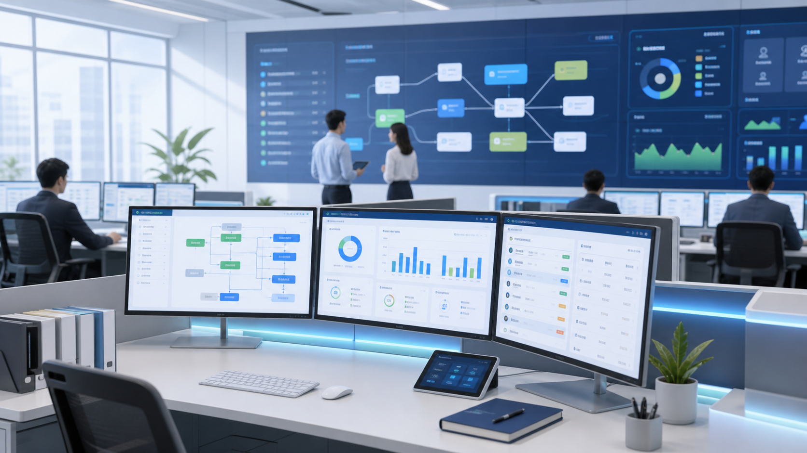

CASE 01
某高校学院综合管理平台
围绕科研项目、学院事务、数据填报、资产设备和流程审批等管理工作，建设统一工作台和流程化管理能力。
我们持续服务不同类型组织的信息化建设需求，理解政企客户在流程规范、数据治理、系统集成、安全权限和长期运维方面的实际要求。
部分项目涉及客户保密要求，页面采用客户类型与脱敏案例方式展示；如需了解更具体的建设范围与项目经验，可在方案沟通中进一步交流。
以下案例采用脱敏方式呈现，重点展示建设场景、交付内容和核心能力，帮助客户判断轻微科技在相近场景中的项目经验。
围绕科研项目、学院事务、数据填报、资产设备和流程审批等管理工作，建设统一工作台和流程化管理能力。
面向样品流转、检测任务、实验记录、设备仪器和报告出具等工作，提升流程规范、质量追溯和权限控制能力。
面向总部与下属单位协同，统一组织、流程、项目、合同和经营数据，提升集团管控效率。
面向多系统入口分散、账号体系不统一、待办消息分散等问题，建设统一门户和流程协同平台。

面向企业线上业务、客户服务、订单流程和运营管理需求，建设轻量化 App、小程序或 SaaS 管理系统，支持快速上线和持续迭代。
面向指标口径不统一、数据汇总依赖人工、管理视图不实时等问题，建设数据治理和驾驶舱能力。
不同客户的业务细节各不相同，但信息化建设中的流程、数据、权限、集成、报表和运维问题往往具有共性。轻微科技会把项目中的高频需求沉淀为可复用经验，提升后续项目的建设效率和交付稳定性。
审批、督办、工单、巡检、填报、预约、任务分派等场景。
数据汇聚、指标口径、数据权限、填报统计和驾驶舱建设经验。
统一身份、单点登录、接口对接、消息待办和第三方系统协同经验。
问题响应、版本迭代、权限调整、数据维护和持续优化服务经验。